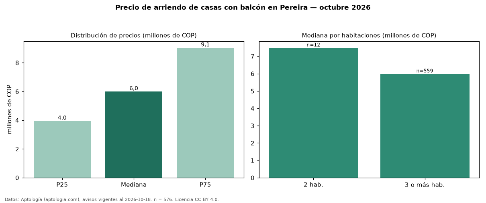

Precio de arriendo de casas con balcón en Pereira — octubre 2026
En Pereira, la mediana de canon mensual de casas con balcón es COP 6,00 millones, según 576 avisos vigentes. Eso es 7 % menos que la mediana de todas las casas en arriendo de Pereira (COP 6,46 millones, n = 965); este segmento reúne el 60 % de esos avisos. Por metro cuadrado, la mediana es COP 21.476/m² al mes (n = 518), 3 % por debajo del conjunto de referencia (COP 22.059/m²). El área mediana anunciada es 260 m². El segmento con más oferta es el de 3 o más habitaciones (559 avisos, mediana COP 6,00 millones); pasar de 2 habitaciones a 3 o más habitaciones cambia la mediana −20 %. La administración mediana declarada es COP 458.000 al mes (n = 271), aparte del canon. La mitad central de los avisos va de COP 3,95 millones a COP 9,05 millones (razón 2,3), una dispersión alta. El estrato más frecuente es 6 (55 % de los avisos con estrato). Datos: Aptología (aptologia.com), CC BY 4.0 — https://www.aptologia.com/arriendo/pereira. Archivos: PDF, CSV con las cifras y gráfica PNG.

| Avisos únicos | 576 |
|---|---|
| Percentil 25 | COP 3.950.000 |
| Mediana | COP 6.000.000 |
| Percentil 75 | COP 9.050.000 |
| Mediana por m² | COP 21.476 |
Fuente: avisos vigentes de portales inmobiliarios recopilados por Aptología, deduplicados (mínimo 30 avisos únicos por celda). Precios pedidos, no cerrados. Fecha: 2026-10-18.